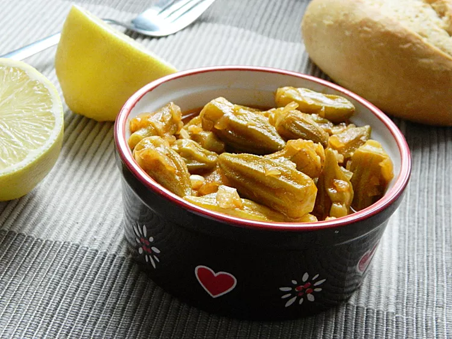

Bamya (Egyptian Okra)

Description
Okra, called bamya in Egyptian Arabic, is a popular vegetable in Egypt. It is either prepared as a stew
with meat or as a simple vegetable side dish, like in this recipe, where frozen okra is used.
Ingredients
- 1 tablespoon butter
- 1 medium onion, chopped
- 1 green bell pepper, chopped
- 5 cloves clove garlic, minced
- 2 ½ cups chicken stock
- 3 tablespoons tomato paste
- 1 pound frozen okra
- lemon, juiced
- salt and pepper to taste
Steps
- Heat butter in a pot over high heat and cook onion, bell pepper, and garlic until lightly colored, about 2
minutes.
- Add chicken stock and tomato paste.
- Stir to combine.
- Reduce heat to medium.
- Add okra and lemon juice and cook until okra is soft, about 15 minutes.
- Season with salt and pepper.
Home